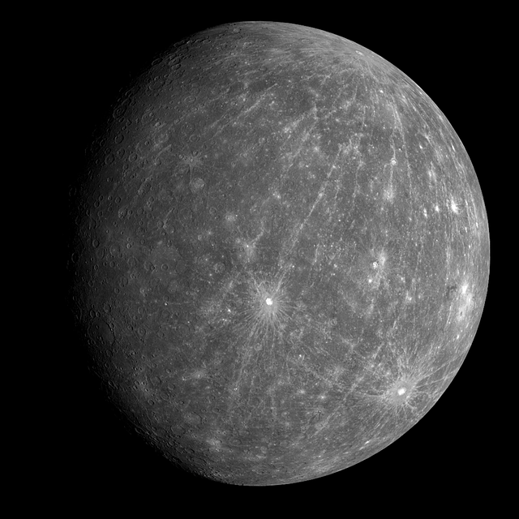
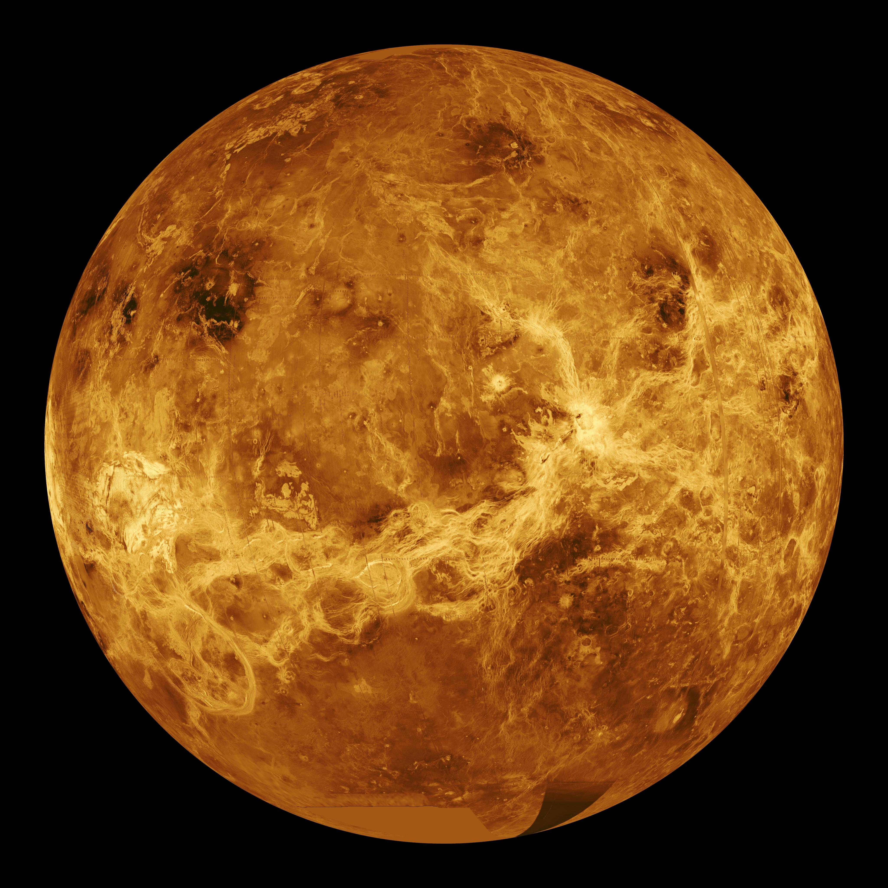
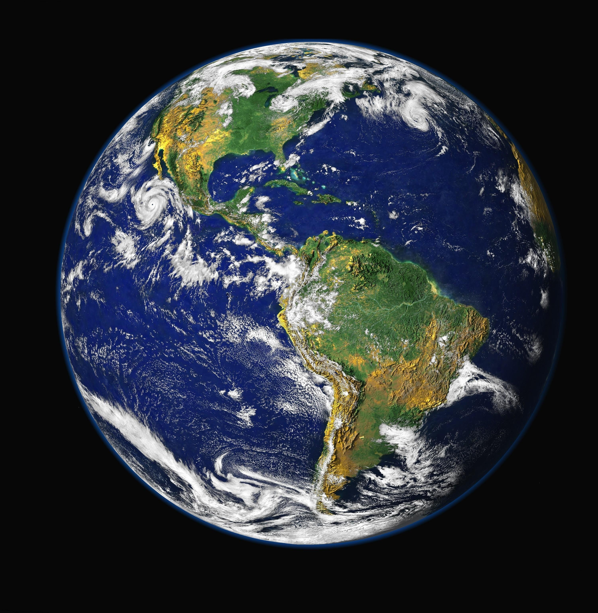
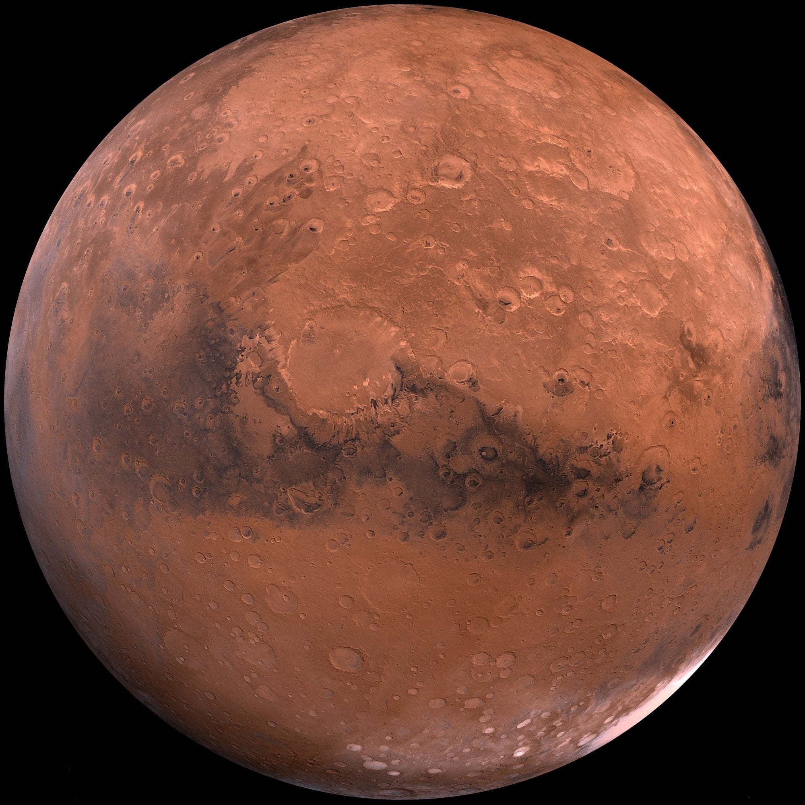

Merkurius ☿
Aurinkokuntamme pienin planeetta ja se on Aurinkoa lähin planeetta.
- Kiviplaneetta.
- Kiertoaika Auringon ympäri 88 vuorokautta
- Kiertää itsensä ympäri 59 vuorokaudessa.
- Nimi tulee roomalaisen mytologian Mercuriuksesta.
Sisäplaneettoja ovat Merkurius, Venus, Maa ja Mars.
Aurinkokuntamme pienin planeetta ja se on Aurinkoa lähin planeetta.
Toinen planeetta Auringosta.
Kotiplaneettamme. Kolmas kivi Auringosta.
Neljäs planeetta Auringosta.



